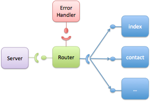

h-ubu can be used in node.js application. Node.js is a platform built on Chrome’s JavaScript runtime for easily building fast, scalable network applications. Node.js uses an event-driven, non-blocking I/O model that makes it lightweight and efficient, perfect for data-intensive real-time applications that run across distributed devices.
With h-ubu you gain modularity and loose-coupling. Your node’s modules interact using h-ubu services, so does not known each others (just the service contract).
Let’s build a pretty simple web application using node and h-ubu. This application is modularized into several components:
The server just starts the HTTP Server. The router handle the request by delegating to the pages or to the error handler. Pages are components serving a content for a specific URL.

The application is available from Github.
First you need to have node.js. You can download it from the node web site. Moreover, you need h-ubu of course.
The main script (_main.js_) loads h-ubu and plugs components on the hub:
require('./hubu-all.js');
var index = require('./index');
var contact = require('./contact');
var contract = require('./contracts');
var server = require('./server');
var router = require('./router-impl');
var error = require('./error');
hub
.registerComponent(router.component)
.registerComponent(index.component)
.registerComponent(server.component)
.registerComponent(contact.component)
.registerComponent(error.component)
.start();
The pages are simple components providing the page service, so bascially a render function and a path function specifying the handled url.
var contracts = require("./contracts");
exports.component = {
getComponentName: function() {
return "index page"
},
start : function() {},
stop : function() {},
configure : function(hub) {
hub.provideService({
contract: contracts.page,
component : this
});
},
render: function() {
return "Hello, I'm powered by h-ubu and node.js";
},
path : function() {
return "/";
}
};
The component object is added to the node’s exports object determining the public part of the module. Notice the requirement on the ‘contract’ module, specifying all contracts.
the router is a bit more complex component as on each request is looks for the right handler. However, using services the set of pages is injected automatically:
var url = require("url");
var contracts = require("./contracts");
var component = {
errorHandler : null,
pages : [],
configure:function (hub) {
hub
.provideService({
contract:contracts.router,
component:this
})
.requireService({
contract:contracts.error,
component:this,
optional:true,
field:"errorHandler"
})
.requireService({
contract : contracts.page,
component: this,
optional : false,
aggregate: true,
field : "pages"
});
},
start : function() { console.log("Router started"); },
stop : function() { console.log("Router stopped"); },
getComponentName : function() { return "router"; },
// Contract implementation
onRequest : function(request, response) {
var pathname = url.parse(request.url).pathname;
console.log("Request for " + pathname + " received.");
// Check if we have a page
for ( var i = 0; i < this.pages.length; i++) {
if (this.pages[i].path() === pathname) {
console.log("Matching page service found");
// Render the page and return
response.writeHead(200, {"Content-Type":"text/plain"});
response.write(this.pages[i].render());
response.end();
return;
}
}
// Not Found
console.log("Page not found...");
var message = "Page not found";
if (this.errorHandler != null) {
message = this.errorHandler.render();
}
response.writeHead(404, {"Content-Type":"text/plain"});
response.write(message);
response.end();
}
};
exports.component = component;
The server component just starts the HTTP Server:
var http = require("http");
var contracts = require("./contracts");
exports.component = {
_port:8888,
router : null,
configure:function (hub, configuration) {
if (configuration != undefined && configuration.port != undefined) {
this._port = configuration.port;
}
hub.requireService({
contract:contracts.router,
component:this,
field:"router"
});
},
start : function() {
http.createServer(this.router.onRequest).listen(this._port);
console.log("Server started on port " + this._port);
},
stop : function() {},
getComponentName : function() { return "server"; }
};
Just run
node main.js
Then open your browser to http://localhost:8888/.